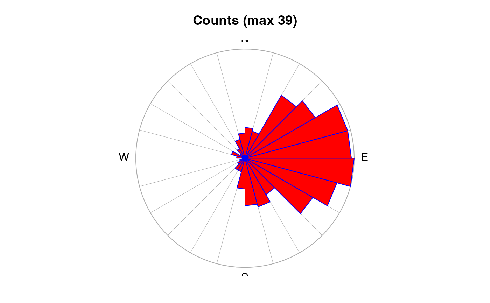

Create a wind-rose object, typically for plotting with
plot,windrose-method().
as.windrose(x, y, dtheta = 15, debug = getOption("oceDebug"))
| x | The x component of wind speed (or stress) or an object of class
|
|---|---|
| y | The y component of wind speed (or stress). |
| dtheta | The angle increment (in degrees) within which to classify the data. |
| debug | A flag that turns on debugging. Set to 1 to get a moderate amount of debugging information, or to 2 to get more. |
A windrose object, with data slot containing
| Item | Meaning |
n | the number of x values |
x.mean | the mean of the x values |
y.mean | the mean of the y values |
theta | the central angle (in degrees) for the class |
count | the number of observations in this class |
mean | the mean of the observations in this class |
fivenum | the fivenum() vector for
observations in this class (the min, the lower hinge, the
median, the upper hinge, and the max) |
Other things related to windrose data:
[[,windrose-method,
[[<-,windrose-method,
plot,windrose-method,
summary,windrose-method,
windrose-class
library(oce) xcomp <- rnorm(360) + 1 ycomp <- rnorm(360) wr <- as.windrose(xcomp, ycomp) summary(wr)#> Windrose data #> ------------- #> #> * Have n= 24 angles, separated by dtheta= 15 #> #> * Data Overview #> #> Min. Mean Max. Dim. NAs OriginalName #> n 360 360 360 1 0 - #> x.mean 1.0351 1.0351 1.0351 1 0 - #> y.mean -0.027362 -0.027362 -0.027362 1 0 - #> theta -172.5 1.5618e-14 172.5 24 0 - #> count 1 15 45 24 0 - #> mean 0.32342 1.2683 2.0221 24 0 - #> fives 0.14489 1.2973 3.6626 24x5 0 - #> #> * Processing Log #> #> - 2020-07-21 16:49:07 UTC: `create 'windrose' object` #> - 2020-07-21 16:49:07 UTC: `as.windrose(x = xcomp, y = ycomp)`plot(wr)